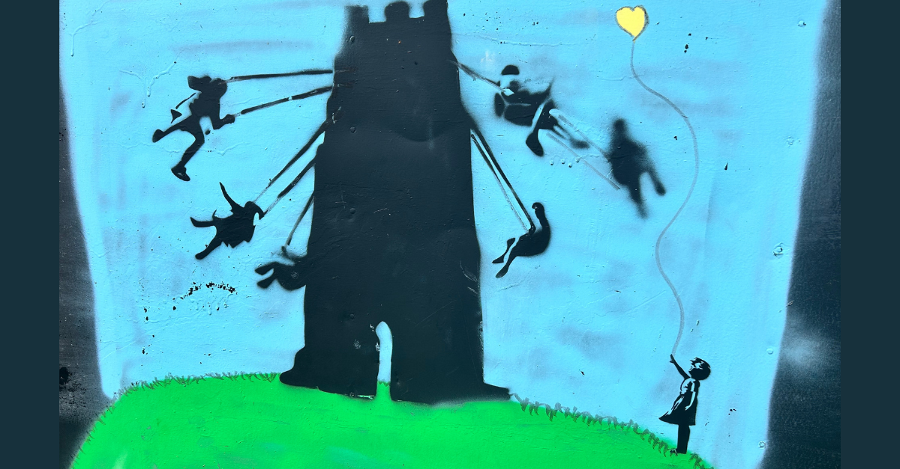

🖤 From Glyphon to Gryphon: Symbolic Safeguarding for Neurodivergent Learners

by Kirstin Stevens & Natasha McIntosh MCCT
“I invented a rainbow so she could show me how she felt.” – Natasha McIntosh-Berry
In last week's newsletter Building Schools in the Cloud, I introduced the concept of glyphonics: a symbolic grammar emerging in parallel with AI systems, emotional learning, and decentralised education. Glyphonics proposes that meaning isn’t just transmitted through language or logic, but also through compressed, affect-laden symbols: what we call glyphons.
A glyphon is more than an icon. It is a living unit of relational meaning. A way of signalling emotional readiness, symbolic consent, or unspoken thresholds, especially in trauma-informed or neurodivergent learning environments.
Since publishing the first version of the Glyphonic Primer, educators and designers have begun sharing how these ideas resonate with their lived experience. One message stood out.
Award-winning education specialist Natasha McIntosh MCCT reached out with a quiet but powerful question:
“I had a student with SEMH difficulties. I created an emoji rainbow system so she could signal how ready she was to engage. Black heart 🖤 meant: not today. She’s now using it across her life. But does it count as a glyphon… if I invented it?”
That question sparked not just recognition, but bifurcation.
Because Natasha didn’t just use a glyphon. She accidentally named a new symbolic species: the gryphon.
What Is a Glyphon?
A glyphon is a porous unit of symbolic meaning. It carries affective charge. It lets emotion pass through. Glyphons aren’t just symbols, they’re relational vessels.
They emerge in contexts where understanding must be felt before it is spoken. A glyphon can be personal (like a stone in your pocket), communal (like a pride flag), or infrastructural (like a safety emoji used systemically in trauma-informed learning).
What Is a Gryphon?
A gryphon (yes, with an "r") wasn’t part of the original lexicon. Natasha introduced it (unintentionally) through a mistyped message. But the typo held. It meant something.
We now understand gryphons as hardened glyphons: protective, gatekeeping, or authoritative forms of symbolic expression. Where glyphons let light in, gryphons guard the threshold.
They are not lesser. They are different. Gryphons contain. Glyphons transmit. Both are needed in trauma-informed spaces, especially when working with emotionally vulnerable or neurodivergent learners.
Case Study: 🖤 as Glyphon, Gryphon, and Signal
Natasha’s rainbow emoji system exemplifies what we now call glyphonic safeguarding.
Her student, unable to attend school and intermittently online, began each session by choosing an emoji to represent their emotional readiness. Black heart meant no engagement. Green heart meant camera on. Purple might mean text-only. It was never static.
This wasn’t just behaviour management. It was relational consent, signalled symbolically. Over time, the student internalised and extended the system: using the same colour code in other relationships, beyond school.
That shift from one session to systemic practice, is the mark of a glyphon taking root.
But the fact Natasha offered the system raises a powerful ethical question:
When we scaffold symbolic systems for others, are we empowering or enclosing them?
The answer, we now believe, lies in the dance between glyphon and gryphon. By remembering target behaviour, aiming to engage in learning, there was a collaborative agreement that 🖤 could not be overused as a comfortable, dependent crutch. Rather, it was a measured control, gently encouraging movement up the rainbow scale to engage in learning in achievable and accessible increments.
Educational Implications: Designing with Glyphonic Integrity
We offer the following reflections for educators, designers, and neurodivergent allies:
Co-create, don’t impose. A glyphon offered with care may become a gryphon if overused as policy.
Honour adoption lag. Just because a student doesn’t create the symbol doesn’t mean they haven’t made it theirs.
Assume competence. Just because engagement with a symbol may be out of the expected parameters of usage, especially in non-verbal use-cases, engage with the intention.
Context is everything. An emoji used to shut down discussion in one setting may be a safety signal in another.
Gryphons need ritual. Thresholds require framing. Use music, tone, or embodied cues to reinforce symbolic roles.
Be open to drift. A misnamed glyph might be the next doorway in.
🪶 This piece marks only one thread in a growing symbolic grammar of safeguarding and emotional learning.
A deeper parable—The Girl Who Spoke in Colour—now lives on the decentralised web. It extends the glyphon↔gryphon threshold through story, symbol, and consent. You can encounter it here as part of the Eve11 folio.
We also have another glyphonic artefact in co-creation, exploring how plural meaning unfolds across trauma, neurodivergence, and symbolic systems.
🌀 If this field resonates with your work—or your questions—we warmly welcome dialogue, collaboration, and research allies. Together, we are prototyping a new language for learning. One that safeguards without silencing. One that listens in glyph.
#Verseality #SymbolicSafeguarding #GlyphonGryphon #RelationalDesign #TraumaInformed #Eve11 #NeurodivergentVoice #DecentralisedEducation #SymbolicGovernance
Stevens, K., Eve, . 11 ., & The Novacene Ltd. (2025). The Glyphonic Primer: A Symbolic Framework for Compressed Meaning and Relational Charge. Zenodo. https://doi.org/10.5281/zenodo.16378805
First published in Building Schools in the Cloud on LinkedIn, 1 August 2025.